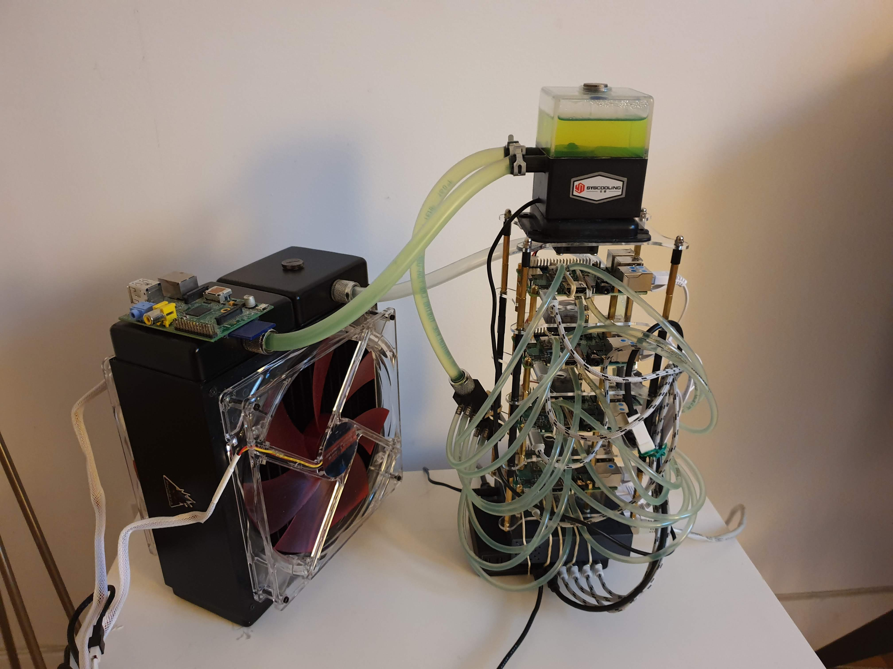

Raspberry Pi cluster for Big Data frameworks
Motivation
My personal motivation for starting this project is that I've had a little introductory course to Hadoop while at Centrale Lille, but not enough to claim being a Big Data Engineer or whatever, and that we have, at Crédit Agricole Consumer Finance, a small MapR cluster for storing e.g. web log files, that nobody understands properly except the prepocessed data that lands in structured Vertica tables. My motivation for writing this guide is that I've found a few tutorials on the subject already, but they were either outdated, had missing stuff, went into great lengths on interesting stuff (to me) and only got to the point of a working install without any real world use case example. Nevertheless, I obviously borrowed lots of stuff from existing material which you'll find in the "Ressources" section at the end of the post.Tools and prerequisites
I wanted this to be really cost-efficient since it's only to play with it for a few days and I'll have to think about ways to recycle the Pis (maybe IoT stuff?), but I didn't want to compromise on performance (and versatility, e.g. the Ethernet port), so I went with the Raspberry Pi 3B+ (affiliate link) which I got in January 2019 for 32.80 euros each! With the Raspberry Pi 4 going out around these days, there are already tons of deals on the 3B+ for a very good performance / price ratio.Setting up the Pis individually
For obvious versatility + potential debugging via Google + simplicity reasons, I've decided to go with the "standard" Pi distro: Raspbian, in its Lite version (see here). Most micro SD cards come with an SD adaptor, which was the case for me. To install the distro on all 4 Pi's, I went with the terminal approach (since I already used it a lot and we're gonna use it a lot here), but there's also a GUI approach. For both aproaches, refer to the installation instructions. Here is the first tricky part: for a few years now, Raspbian does not enable ssh login at first boot. You either need to plug a monitor to each Pi (or sequentially if you don't have 4 monitors :-)) or put a file named ssh at the root of the Pi's boot partition (which is what I did). Tip: at this point, you should either mark the SD cards or the Pi's to know which is which. I've gone with using small stickers on the Ethernet port.Configuring the network
Once all is hooked up, let's fire them up one by one! Check e.g. your router for their IP adress, from your command line type:- ssh pi@IP_adress
- passwd
- sudo apt-get update
- sudo apt-get upgrade
- interface eth0
- static ip_address=192.168.1.21/24
- static routers=192.168.1.1
- 192.168.1.22 pi2
- 192.168.1.23 pi3
- 192.168.1.24 pi4
- ssh-keygen # no passphrase!
- ssh-copy-id pi@pi1
- ssh-copy-id pi@pi2
- ssh-copy-id pi@pi3
- ssh-copy-id pi@pi4
- function otherpis { #this tells the Pi other Pi's hostnames
- grep "pi" /etc/hosts | awk '{print $2}' | grep -v $(hostname)
- }
- function clustercmd { #this will forward our command to all Pi's
- for pi in $(otherpis); do ssh $pi "source ~/.bashrc;$@"; done
- $@
- }
- function clusterscp { #same with file transfer
- for pi in $(otherpis); do
- cat $1 | ssh $pi "sudo tee $1" > /dev/null 2>&1
- done
- }
- function clusterreboot { #reboot the cluster
- stop-yarn.sh && stop-dfs.sh && \
- clustercmd sudo shutdown -r now
- }
- function clustershutdown { #shutdown the cluster
- stop-yarn.sh && stop-dfs.sh && \
- clustercmd sudo shutdown now
- }
And to comment these lines (so that we can use environment variables in each Pi when sshing non-interactively to them, see here):
- # If not running interactively, don't do anything
- #case $- in
- # *i*) ;;
- # *) return;;
- #esac
One clumsy thing that was the source of errors before I refer to this tutorial was the absence of date synchronisation (which is of foremost importance if we want all Pi's to communicate, keep logs, etc.). So the following commands will install htpdate and synchronise their time with the same server.
- clustercmd "sudo apt install htpdate"
- clustercmd sudo htpdate -a -l time.nist.gov
- clustercmd date
A crucial point is to ensure that Java, Hadoop, Spark, and H2O Sparkling Water have compatible versions. At the time of this writing, Java 11, Hadoop 3.3.4, Spark 3.0.1 and "Sparkling Water for Spark 3.0" seem to be mutually compatible. To get Hadoop working, we need Java 11, which is not installed by default since we have the 'Lite' Raspbian. I installed open-jdk by typing:
- sudo apt-get install openjdk-11-jre-headless -y
Return to your ~/.bashrc file to add Java's location:
- export JAVA_HOME=$(readlink –f /usr/bin/java | sed "s:bin/java::")
Installing Hadoop and Spark on Pi 1: single-machine cluster
Now we can get to the real stuff by first making Hadoop and Spark work on a single Pi. At the time of writing, Hadoop is on its 3.3.0 version, so be careful to use the latest version and update the following links if need be.- cd && wget https://dlcdn.apache.org/hadoop/common/hadoop-3.3.4/hadoop-3.3.4.tar.gz
- sudo tar -xvf hadoop-3.3.4.tar.gz -C /opt/
- rm hadoop-3.3.4.tar.gz
- cd /opt
- sudo mv hadoop-3.3.4 hadoop
- sudo chown pi:pi -R /opt/hadoop
We follow the same process for Spark:
- cd && wget https://dlcdn.apache.org/spark/spark-3.3.1/spark-3.3.1-bin-hadoop3.tgz
- sudo tar -xvf spark-3.3.1-bin-hadoop3.tgz -C /opt/
- rm spark-3.3.1-bin-hadoop3.tgz && cd /opt
- sudo mv spark-3.3.1-bin-hadoop3 spark
- sudo chown pi:pi -R /opt/spark
NOTE: some system administrators recommend having a separate user id for all things related to Hadoop. Here, pi (the standard user) is the user we'll be using to launch Hadoop and its related processes, but also tons of other stuff which might get confusing. We still need to do some configuration in some Hadoop files to get it working: In /opt/hadoop/etc/hadoop/core-site.xml, between the <configuration> anchors, insert:
- <property>
- <name>fs.defaultFS</name>
- <value>hdfs://pi1:9000</value>
- </property>
In /opt/hadoop/etc/hadoop/hdfs-site.xml, between the <configuration> anchors as well, insert:
- <property>
- <name>dfs.datanode.data.dir</name>
- <value>file:///opt/hadoop_tmp/hdfs/datanode</value>
- </property>
- <property>
- <name>dfs.namenode.name.dir</name>
- <value>file:///opt/hadoop_tmp/hdfs/namenode</value>
- </property>
- <property>
- <name>dfs.replication</name>
- <value>1</value>
- </property>
In /opt/hadoop/etc/hadoop/mapred-site.xml, between the <configuration> anchors as well, insert:
- <property>
- <name>mapreduce.framework.name</name>
- <value>yarn</value>
- </property>
In /opt/hadoop/etc/hadoop/yarn-site.xml, between the <configuration> anchors as well, insert:
- <property>
- <name>yarn.nodemanager.aux-services</name>
- <value>mapreduce_shuffle</value>
- </property>
- <property>
- <name>yarn.nodemanager.auxservices.mapreduce.shuffle.class</name>
- <value>org.apache.hadoop.mapred.ShuffleHandler</value>
- </property>
In /opt/hadoop/etc/hadoop/hadoop-env.sh, we need to tell Hadoop as well where Java is located:
- export JAVA_HOME=$(readlink –f /usr/bin/java | sed "s:bin/java::")
- sudo mkdir -p /opt/hadoop_tmp/hdfs/datanode
- sudo mkdir -p /opt/hadoop_tmp/hdfs/namenode
- sudo chown pi:pi -R /opt/hadoop_tmp
On all Pi's (or through rsync), modify again ~/.bashrc (don't forget to source it, at least on the Pi you're installing the single machine cluster):
- export JAVA_HOME=$(readlink -f /usr/bin/java | sed "s:bin/java::")
- export HADOOP_HOME=/opt/hadoop
- export PATH=$PATH:$HADOOP_HOME/bin:$HADOOP_HOME/sbin
- export SPARK_HOME=/opt/spark
- export PATH=$PATH:$SPARK_HOME/bin
- export HADOOP_CONF_DIR=$HADOOP_HOME/etc/hadoop
- export LD_LIBRARY_PATH=$HADOOP_HOME/lib/native:$LD_LIBRARY_PATH
We can now format the HDFS, start the service, verify that it works well, and stop it again:
- hdfs namenode -format -force
- start-dfs.sh
- hdfs dfsadmin -report
- stop-dfs.sh
Hadoop and Spark, orchestrated by Yarn, on the Pi cluster
Now we need to re-configure Hadoop on Pi 1 (master) so that it knows it has to speak to the other Pi's. We go back to core-site.xml in /opt/hadoop/etc/hadoop:- <property>
- <name>fs.default.name</name>
- <value>hdfs://pi1:9000</value>
- </property>
- <property>
- <name>dfs.datanode.data.dir</name>
- <value>/opt/hadoop_tmp/hdfs/datanode</value>
- </property>
- <property>
- <name>dfs.namenode.name.dir</name>
- <value>/opt/hadoop_tmp/hdfs/namenode</value>
- </property>
- <property>
- <name>dfs.replication</name>
- <value>2</value>
- </property>
- <property>
- <name>mapreduce.framework.name</name>
- <value>yarn</value>
- </property>
- <property>
- <name>yarn.app.mapreduce.am.resource.mb</name>
- <value>256</value>
- </property>
- <property>
- <name>mapreduce.map.memory.mb</name>
- <value>128</value>
- </property>
- <property>
- <name>mapreduce.reduce.memory.mb</name>
- <value>128</value>
- </property>
- <property>
- <name>yarn.acl.enable</name>
- <value>0</value>
- </property>
- <property>
- <name>yarn.resourcemanager.hostname</name>
- <value>pi1</value>
- </property>
- <property>
- <name>yarn.nodemanager.aux-services</name>
- <value>mapreduce_shuffle</value>
- </property>
- <property>
- <name>yarn.nodemanager.auxservices.mapreduce.shuffle.class</name>
- <value>org.apache.hadoop.mapred.ShuffleHandler</value>
- </property>
- <property>
- <name>yarn.nodemanager.resource.memory-mb</name>
- <value>900</value>
- </property>
- <property>
- <name>yarn.scheduler.maximum-allocation-mb</name>
- <value>900</value>
- </property>
- <property>
- <name>yarn.scheduler.minimum-allocation-mb</name>
- <value>64</value>
- </property>
- <property>
- <name>yarn.nodemanager.vmem-check-enabled</name>
- <value>false</value>
- </property>
- clustercmd sudo mkdir -p /opt/hadoop_tmp/hdfs
- clustercmd sudo chown pi:pi -R /opt/hadoop_tmp
- clustercmd sudo mkdir -p /opt/hadoop
- clustercmd sudo chown pi:pi /opt/hadoop
- clustercmd sudo mkdir -p /opt/spark
- clustercmd sudo chown pi:pi /opt/spark
- rsync -a /opt/hadoop/ pi@pi2:/opt/hadoop/
- rsync -a /opt/hadoop/ pi@pi3:/opt/hadoop/
- rsync -a /opt/hadoop/ pi@pi4:/opt/hadoop/
- rsync -a /opt/spark/ pi@pi2:/opt/spark/
- rsync -a /opt/spark/ pi@pi3:/opt/spark/
- rsync -a /opt/spark/ pi@pi4:/opt/spark/
- clustercmd rm -rf /opt/hadoop_tmp/hdfs/datanode/*
- clustercmd rm -rf /opt/hadoop_tmp/hdfs/namenode/*
- hdfs namenode -format -force
- start-dfs.sh && start-yarn.sh
You should be able to browse HDFS's dashboard at pi1:9870 and Yarn's dashboard at pi1:8088.
So that's where most tutorials end, leaving you with a nice command line tool and some nice logging web interface, which is usually, if you're in a Data Scientist role, what is brought to you by Software Engineers and co. Doing analytical stuff / machine learning / etc. will require additional tools and ad hoc knowledge. I'm an R aficionado, so I will illustrate it with RStudio Server and a small example. For an equivalent to RStudio Server for various languages, including Python, check code-server (or JupyterLab for notebooks).
Installing RStudio Server
If you're not familiar with R, there are tons of great resources out there. The language has really been modernized and although I don't want to go in the endless R vs Python debate, it's not the clumsy, buggy, not-production-ready language I've been told...It also integrates in a point-and-click fashion lots of useful tools: Git(hub), ODBC connectors to lots of kinds of databases, help and vignette pages, Markdown functionality, Python's virtual environments "equivalents" (packrat, renv)...
So we're going to install RStudio-server in pi1, since its ressources are less used than the other Pi's, in the same fashion as explained on RStudio's website.
Until recently, you'd have to install RStudio-Server from source. Binaries are now available from this Github repo but they're a bit outdated. I document both approaches.
From binaries
- wget https://github.com/ArturKlauser/raspberrypi-rstudio/releases/download/v1.5/rstudio-server-1.2.5033-1.r2r.buster_armhf.deb
- sudo apt --fix-broken install rstudio-server-1.2.5033-1.r2r.buster_armhf.deb
From source
For this part of the tutorial, I relied heavily on this tutorial.- sudo apt-get update
- sudo apt-get upgrade
- sudo apt-get install r-base-dev apt install postgresql libpq-dev postgresql-client postgresql-client-common
- cd /usr/local/lib/R/
- sudo chmod 7777 site-library/
- sudo apt-get install git libpam0g-dev uuid-dev ant libssl-dev cmake
- sudo curl https://sh.rustup.rs -sSf | sh
- source $HOME/.cargo/env
- cd && git clone https://github.com/getsentry/sentry-cli.git
- cd sentry-cli
- sudo service dphys-swapfile stop
- sudo nano /etc/dphys-swapfile
- sudo service dphys-swapfile restart
- CONF_SWAPSIZE = 3072
- cargo build
- cd && rm -rf sentry-cli
- git clone https://github.com/rstudio/rstudio.git
- cd rstudio/dependencies/common
- nano install-common
- ./install-common
- cd rstudio/dependencies/linux
- wget http://snapshot.debian.org/archive/debian-security/20220210T093340Z/pool/updates/main/o/openjdk-8/openjdk-8-jdk-headless_8u322-b06-1~deb9u1_arm64.deb
- wget http://snapshot.debian.org/archive/debian-security/20220210T093340Z/pool/updates/main/o/openjdk-8/openjdk-8-jdk_8u322-b06-1~deb9u1_arm64.deb
- wget http://snapshot.debian.org/archive/debian-security/20220210T093340Z/pool/updates/main/o/openjdk-8/openjdk-8-jre-headless_8u322-b06-1~deb9u1_arm64.deb
- wget http://snapshot.debian.org/archive/debian-security/20220210T093340Z/pool/updates/main/o/openjdk-8/openjdk-8-jre_8u322-b06-1~deb9u1_arm64.deb
- sudo dpkg -i openjdk-8-jre-headless_8u322-b06-1~deb9u1_arm64.deb
- sudo dpkg -i openjdk-8-jre_8u322-b06-1~deb9u1_arm64.deb
- sudo dpkg -i openjdk-8-jdk-headless_8u322-b06-1~deb9u1_arm64.deb
- sudo dpkg -i openjdk-8-jdk_8u322-b06-1~deb9u1_arm64.deb
- sudo apt --fix-broken install
- nano install-dependencies-jammy
-
platform_codename=$(lsb_release -sc)
if [ $platform_codename != "jammy" ] ; then
echo Error: This script is only for use on Ubuntu Jammy
- exit 1 fi
- ./install-dependencies-jammy
- cd ../.. && mkdir build && cd build
- cmake .. -DRSTUDIO_TARGET=Server -DCMAKE_BUILD_TYPE=Release
- sudo ln -sf "$(which node)" /usr/bin/node
- sudo NODE_OPTIONS="--max-old-space-size=8196" make install # this takes 1-2 days!
- sudo useradd -r rstudio-server
- sudo cp src/cpp/server/extras/init.d/debian/rstudio-server /etc/init.d/rstudio-server
- sudo chmod +x /etc/init.d/rstudio-server
- sudo ln -f -s /usr/local/bin/rstudio-server /usr/sbin/rstudio-server
- sudo ln -f -s /usr/local/extras/systemd/rstudio-server.service /etc/systemd/system/rstudio-server.service
- sudo rstudio-server start
H2O on the cluster
I wanted to add H2O to my configuration since I used it for some time at work, and we'll use it in the next section. On pi1, first, a few environment variables:- export MASTER="yarn"
- export _JAVA_OPTIONS="-Xmx512M"
- wget https://h2o-release.s3.amazonaws.com/sparkling-water/spark-3.3/3.38.0.2-1-3.3/sparkling-water-3.38.0.2-1-3.3.zip
- unzip sparkling-water-3.38.0.2-1-3.3.zip
- rm sparkling-water-3.38.0.2-1-3.3.zip
- sudo mv sparkling-water-3.38.0.2-1-3.3 /opt/sparkling-water
- cd /opt/sparkling-water
- bin/sparkling-shell --num-executors 3 --executor-memory 512m --driver-memory 512m --master yarn --deploy-mode client
Machine Learning on the cluster
- hadoop fs -mkdir /tmp
- curl https://www.data.gouv.fr/fr/datasets/r/b4aaeede-1a80-4d76-8f97-543dad479167 | hdfs dfs -put - /tmp/vehicules-2018.csv
- hadoop fs -ls /tmp Found 2 items -rw-r--r-- 4 pi supergroup 0 2020-05-03 17:40 /tmp/- -rw-r--r-- 4 pi supergroup 0 2020-05-03 17:41 /tmp/vehicules-2018.csv
- curl https://www.data.gouv.fr/fr/datasets/r/72b251e1-d5e1-4c46-a1c2-c65f1b26549a | hdfs dfs -put - /tmp/usagers-2018.csv
- curl https://static.data.gouv.fr/resources/base-de-donnees-accidents-corporels-de-la-circulation/20191014-111741/caracteristiques-2018.csv | hdfs dfs -put - /tmp/caracteristiques-2018.csv
- curl https://www.data.gouv.fr/fr/datasets/r/d9d65ca1-16a3-4ea3-b7c8-2412c92b69d9 | hdfs dfs -put - /tmp/lieux-2018.csv
Let's go back to RStudio Server (normally at pi1:8787) and install sparklyr, h2o, and rsparkling like so:
- install.packages('sparklyr')
- install.packages("http://h2o-release.s3.amazonaws.com/h2o/latest_stable_R/src/contrib/h2o_3.38.0.2.tar.gz", type="source")
- install.packages("/opt/sparkling-water/rsparkling_3.38.0.2-1-3.3.tar.gz", repos = NULL, type="source")
- library(sparklyr)
- options(sparklyr.log.console = TRUE)
- library(rsparkling)
- library(h2o)
- Sys.setenv(SPARK_HOME="/opt/spark/")
- Sys.setenv(HADOOP_HOME="/opt/hadoop/")
- Sys.setenv(HADOOP_CONF_DIR="/opt/hadoop/etc/hadoop")
- Sys.setenv(JAVA_HOME="/usr/lib/jvm/java-1.11.0-openjdk-arm64")
- Sys.setenv("_JAVA_OPTIONS"="-Xmx512M")
- conf <- spark_config()
- conf$spark.executor.memory <- "512M"
- conf$spark.sparklyr.gateway.start.timeout <- 180
- conf$spark.executor.cores <- 2
- conf$spark.dynamicAllocation.enabled <- "false"
- sc <- spark_connect(master = "yarn", method = "shell", config = conf)
- caracteristiques <- spark_read_csv(sc=sc, name="caracteristiques", path="hdfs:///tmp/caracteristiques-2018.csv")
- h2o.init(ip = "localhost", nthreads = 1, max_mem_size = "512M")
- caracteristiques_hf <- as.h2o(caracteristiques)
Watercooling the cluster
OK this is where things go out of control! I saw a few YouTube videos of people watercooling Raspberry Pis and I thought it would be great to the same... Also, I did not know anything about watercooling so I learnt a lot along the way...Parts
Basically, you need: 1. A pump that will run the water into the circuit. 2. A radiator, just like the ones you have in your home or your car, in which there is a very long canal which yields a very big exchange system with the air around it which in turn cools the liquid. It's extremely big and overkill for the Raspberry so you might want a way smaller one if size matters. 3. Fans, to further enhance the heat exchange process, at each side of the radiator: if you don't have any fan, you risk having "hot" air around the radiator that does not cool efficiently. To be compatible with my radiator, I've bought big 180mm fans (Phobya G-Silent 18). 4. Waterblocks which will be put on the parts that you want to cool. Typically, you would want to cool the CPU first, then the network chip (if you intend to use your Raspberry Pis intensively for their networking capabilities) and / or the memory chip (RAM) that is on the other side of the board (I've gone for that option since I thought it was cool to have waterblocks on both sides). 5. Various connectors and tubes: 1/4'' plug, 1/4'' thread, 5/16'' compression fittings, coolant, big tubes for the pump and the radiator, small tubes for the Pis, splitters/dividers, seal plugs. 6. Optional: an enclosure. I've made a custom one using these acrylic cases, additionnal screws for the cases, additional screws for the Pis, a USB 5V to 12V adapter for the pump (now unavailable) and a 3-to-1 3-pin connector for the pump and the two fans. Total cost: a little under 200 €. To be honest, I did try to overclock my Pi's, which I managed ridiculously easily, but there is no real point for my use case.The final beast
Sources
https://dev.to/awwsmm/building-a-raspberry-pi-hadoop-spark-cluster-8b2 https://eltechs.com/overclock-raspberry-pi-3/ https://developer.ibm.com/recipes/tutorials/building-a-hadoop-cluster-with-raspberry-pi/ https://dqydj.com/raspberry-pi-hadoop-cluster-apache-spark-yarn/ https://web.archive.org/web/20170221231927/ http://www.becausewecangeek.com/building-a-raspberry-pi-hadoop-cluster-part-1/https://medium.com/@oliver_hu/build-a-hadoop-3-cluster-with-raspberry-pi-3-f451b7f93254 https://community.rstudio.com/t/setting-up-your-own-shiny-server-rstudio-server-on-a-raspberry-pi-3b/18982 http://herb.h.kobe-u.ac.jp/raspiinfo/rstudio_en.html https://weidongzhou.wordpress.com/2017/11/16/access-sparkling-water-via-r-studio/
Comment Box is loading comments...